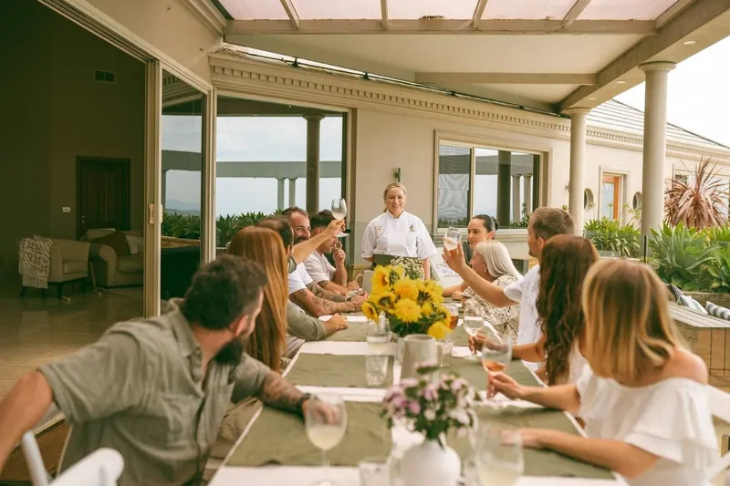

Wollongong · Illawarra
Private chef in Wollongong & the Illawarra
Chef Brooke Silk is based in Figtree, Wollongong. Private dining, cooking classes, banquets, canapés and grazing, cooked and served in your home or venue.
We service the Illawarra, South Coast, Highlands, and Greater Sydney. Dine In brings gourmet experiences to your doorstep, ensuring an unforgettable event wherever you are.
- 5.0 from 60 Google reviewsRated by guests on Google
- Top 3 Wedding Caterer 2026Illawarra & Southern Highlands
- Free travel within 30 minutesof Brooke’s base in Figtree


Travel to you
Close to home
Brooke’s base is in Figtree. Travel is free within a 30-minute drive, and a flat fee applies beyond that.
| Drive time from Figtree | Travel fee |
|---|---|
| Within 30 minutes | Free |
| 30–60 minutes | $50 flat fee |
| 60–90 minutes | $100 flat fee |
| 90+ minutes | Custom quote based on the location |
Overnight stays: if an event location requires the team to stay overnight, additional accommodation and meal costs may apply, agreed before the booking is finalised. From the Terms & Conditions.
In the local news
 Illawarra Mercury Covering World Food Championship
Illawarra Mercury Covering World Food ChampionshipChef Brooke Silk wins her second Australian dessert title with a ricotta doughnut creation, earning a spot at the World Food Championships in the US.
 Regional Illawarra Article covering Dine In
Regional Illawarra Article covering Dine InAn in-depth newspaper feature where Chef Brooke Silk shares the inspiring culinary journey behind Dine In's exquisite dining experiences.
 Illawarra Business Award Winner
Illawarra Business Award WinnerDine In proudly recognised as a Winner in the prestigious Illawarra Local Business Awards, celebrating excellence in our local community.
 ABC Illawarra radio
ABC Illawarra radioChef Brooke Silk discusses sustainable cooking and local produce during her 'Paddock to Plate' segment on ABC Illawarra radio.
How it works
A restaurant night, without leaving home
Choose your experience
Private dining, a cooking class, grazing, canapés or a full banquet, for an intimate dinner or a wedding.
Brooke designs your menu
Original dishes built around local, seasonal produce, your favourites and every guest's dietary needs.
Sit back with your guests
Brooke and her team cook, serve and clean up, leaving your kitchen exactly as they found it.
-
We service the Illawarra, South Coast, Highlands, and Greater Sydney.
Dine In brings gourmet experiences to your doorstep, ensuring an unforgettable event wherever you are.
-
The cost varies depending on the menu selected, the number of guests, and specific service requirements.
We offer transparent pricing with no hidden fees.
Contact us for a personalised quote tailored to your event's needs.
-
A standard kitchen setup is usually sufficient. We'll discuss specific requirements based on your chosen menu during the planning process. If additional equipment is needed, we can arrange rentals.
Check your date in the Illawarra
Tell Brooke the date, guest count and suburb, and she’ll come back with availability and a menu.
Or call Brooke on 0432 804 952